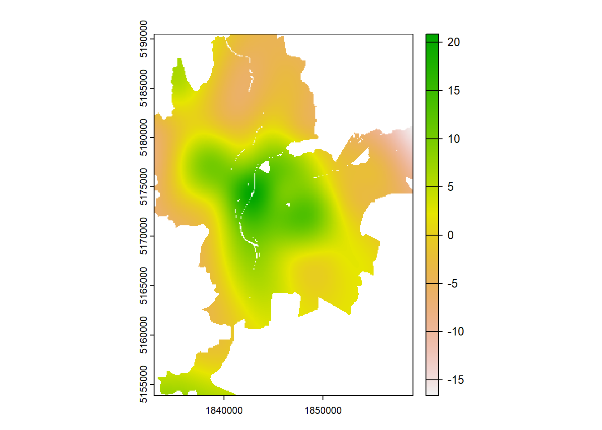

Dans ce chapitre, nous abordons deux formes de modèles généralisées additifs (Generalized additive model en anglais – GAM) qui permettent d’introduire l’espace de manière différente : les modèles GAM avec une spline bivariée avec les coordonnées géographiques (x, y) pour capturer les variations continues dans l’espace; les modèles GAM avec un lissage par champ aléatoire de Markov (random markov field – RMF) pour modéliser la dépendance spatiale entre les unités spatiales voisines.
Objectifs d’apprentissage visés dans ce chapitre
À la fin de ce chapitre, vous devriez être en mesure de :
Comprendre pourquoi utiliser un modèle GAM avec un spline bivariée sur les coordonnées géographiques ou avec un lissage par champ aléatoire de Markov.
Comprendre les différentes entre ces deux modèles : effets spatiaux lisses et globaux versus effets spatiaux locaux avec dépendance de voisinage.
Analyser les résultats produits par ces deux types de modèles GAM.
Les mettre en pratique dans R.
Liste des packages utilisés dans ce chapitre
Pour importer et manipuler des fichiers géographiques :
sf pour importer et manipuler des données vectorielles.
Pour construire des cartes et des graphiques :
tmap est certainement le meilleur package pour la cartographie.
ggplot2 pour construire des graphiques.
Pour construire des modèles GAM :
mcgv pour pratiquer ses GAM dans R!
5.1 Modèles généralisés additifs (GAM) avec une spline bivariée sur les coordonnées géographiques
Les modèles généralisés additifs (Generalized additive models en anglais) permettent d’intégrer à la fois des effets linéaires et des effets non linéaires avec des splines. Ils peuvent alors être utilisés en intégrant une spline bivariée sur les coordonnées géographiques des centroïdes des entités spatiales.
\(\beta\), les coefficients des variables dépendantes.
\(s(CoordX,CoordY)\), spline bivariée sur les coordonnées x et y.
\(\epsilon\), les résidus.
5.1.1.2 Pourquoi recourir à un modèle GAM avec une spline bivariée sur les coordonnées géographiques
L’intérêt de recourir à une spline bivariée sur les coordonnées géographiques est double :
Contrôler l’effet de la localisation sur la variable dépendante (\(y\)). Les coefficients des autres variables indépendantes sont ainsi obtenus une fois l’espace pris en compte.
Évaluer l’effet de la localisation (patron spatial), une fois les autres variables indépendantes contrôlées. Autrement dit, toutes choses étant égales par ailleurs, quel est l’effet de la localisation sur la variable dépendante?
5.1.2 Mise en oeuvre et analyse dans R
5.1.2.1 Réalisation du modèle GAM
Pour construire des modèles GAM dans R, nous utilisons la fonction gam du packagemgcv(Wood 2011).
## Chargement des packageslibrary(sf)library(spdep)library(mgcv)## Chargement des donnéesload("data/chap04/DonneesLyon.Rdata")## Ajout des coordonnées X et Y dans LyonIris xy<-st_coordinates(st_centroid(LyonIris))LyonIris$X<-xy[,1]LyonIris$Y<-xy[,2]## Construction du modèle MCOModele.MCO<-lm(NO2~Pct0_14+Pct_65+Pct_Img+Pct_brevet+NivVieMed, data =LyonIris)## Construction du modèle GAMModele.GAM1<-gam(NO2~Pct0_14+Pct_65+Pct_Img+Pct_brevet+NivVieMed+s(X, Y), # spline sur les coordonnées X, Y data =LyonIris)# dataframe## Résultats du modèlesummary(Modele.GAM1)
Les résultats ci-dessus signalent que la localisation a un effet très significatif puisque (s(X,Y) = 26,5 avec p < 0,001). Notez que la valeur de p permet de déterminer si la spline bivariée (et donc l’espace) a ou non un effet significatif. Si la valeur de p est supérieure à 0,05, alors il n’est pas nécessaire de conserver la spline bivariée sur les coordonnées géographiques.
De plus, le code ci-dessous permet de constater que le modèle GAM est plus performant que le modèle linéaire multiple classique (MCO).
Pour visualiser les prédictions du modèle dans l’espace, toutes choses étant égales par ailleurs, nous utilisons la fonction vis.gam (figure 5.1). Les contours signalent qu’au centre de Lyon, les valeurs de dioxyde d’azote sont les plus élevées et dépassent même 40 \(\mu\)g/m3.
Figure 5.1: Visualisation des prédictions dans l’espace avec la fonction vis.gam
Toutefois, il est plus intéressant de la représenter dans un raster, une fois contrôlées les autres variables indépendantes. Pour ce faire, six étapes sont nécessaires :
Créer une grid.
Fixer les autres paramètres à leur moyenne respective.
Calculer la prédiction pour la localisation.
Centrer la prédiction.
Construire le raster avec les prédictions.
Découper et cartographier le raster.
library(raster)library(terra)## Étape 1 : création d'une grid pour la prédiction de 100 mètres de résolution spatialeXcoords<-seq(min(LyonIris$X-100), max(LyonIris$X+100), by=100)Ycoords<-seq(min(LyonIris$Y-100), max(LyonIris$Y+100), by=100)PredDF<-expand.grid(Xcoords,Ycoords)names(PredDF)<-c("X","Y")## Étape 2 : fixation de tous les autres paramètres à leur moyennefor(Varinc("VegHautPrt","Pct0_14","Pct_65","Pct_Img","Pct_brevet", "NivVieMed")){PredDF[[Var]]<-mean(LyonIris[[Var]])}## Étape 3 : calcul de la prédictionPredDF$PM25<-predict(Modele.GAM2,newdata=PredDF)## Étape 4 : centrage de la prédiction (sans la constante)PredDF$CenterPredPM25<-PredDF$PM25-mean(PredDF$PM25)### Étape 5 : construction du rasterrasterGAM<-rasterFromXYZ(PredDF[, c("X", "Y", "CenterPredPM25")])crs(rasterGAM)<-crs(as(LyonIris, "Spatial"))rasterGAM<-rast(rasterGAM)### Étape 6 : découpage et cartographie du rasterLyonIris.SpatVector<-vect(LyonIris)rasterGAM<-terra::mask(rasterGAM, LyonIris.SpatVector)terra::plot(rasterGAM)

Figure 5.2: Visualisation de l’effet de la localisation centrée sur zéro
La figure 5.2 signale que dans le centre de Lyon, le dioxyde d’azote est plus élevé de 10 à 20 \(\mu\)g/m3, toutes choses étant égales par ailleurs. À l’inverse, dans les zones périphériques, il est faible. Cela signale un net patron spatial décroissant du centre vers la périphérie.
5.1.2.3 Dépendance spatiale du modèle GAM
Par contre, bien que l’autocorrélation spatiale des résidus du modèle GAM soit plus faible que pour le modèle MCO (I de Moran de 0,337 contre 0,570 avec p < 0,001), il reste que le problème de la dépendance spatiale n’est pas corrigé.
## Matrice de contiguïté selon le partage d'un segment (Rook)Rook<-poly2nb(LyonIris, queen=FALSE)W.Rook<-nb2listw(Rook, zero.policy=TRUE, style ="W")## Autocorrélation sur les résidus du modèle GAMmoran.mc(resid(Modele.GAM2), W.Rook, nsim=999)
Monte-Carlo simulation of Moran I
data: resid(Modele.GAM2)
weights: W.Rook
number of simulations + 1: 1000
statistic = 0.33664, observed rank = 1000, p-value = 0.001
alternative hypothesis: greater
5.2 GAM avec un lissage par champ aléatoire de Markov
5.2.1 Principe de base d’un avec un champ aléatoire de Markov
library(sf)library(mgcv)load("data/chap07/DonneesLyon.Rdata")# Ajout des coordonnées x et yxy <- à compléterLyonIris$X <- à compléterLyonIris$Y <- à compléter# Construction du modèleformule <-"PM25 ~ Pct0_14+Pct_65+Pct_Img+Pct_brevet+NivVieMed"Modele.GAM2 <-gam(NO2 ~ à compléter à compléter,data = LyonIris)summary(Modele.GAM2)
Wood, Simon N. 2011. « Fast stable restricted maximum likelihood and marginal likelihood estimation of semiparametric generalized linear models. »Journal of the Royal Statistical Society Series B: Statistical Methodology 73 (1): 3‑36. https://doi.org/10.1111/j.1467-9868.2010.00749.x.